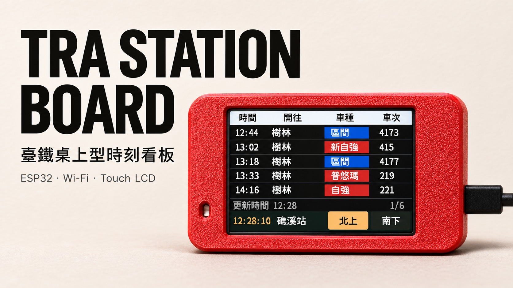
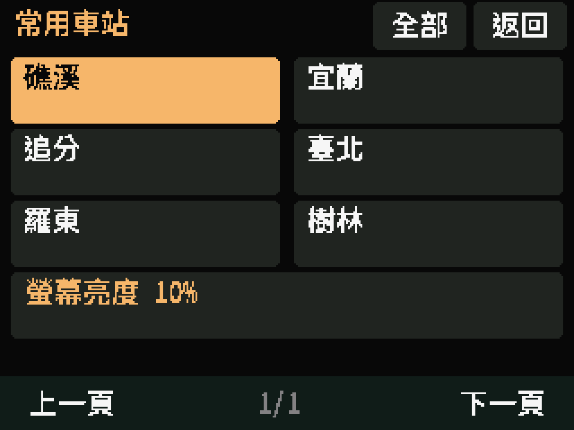
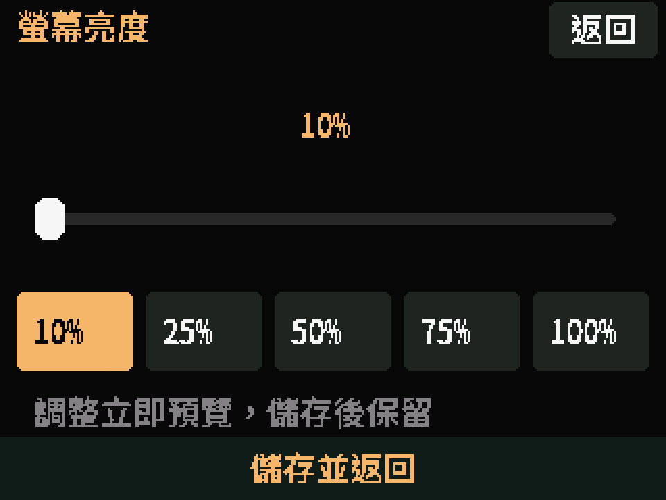

246全台車站選擇
2 分鐘檢查官方 ODS 更新
10–100%觸控調整背光
180°螢幕與觸控同步翻轉
01 ／ 安裝到你的板子
三分鐘的準備，
下一班的陪伴。
準備一條 USB 資料線及電腦。建議以電腦版 Chrome 或 Edge 開啟此頁；我們會自動檢查瀏覽器支援。
正在檢查瀏覽器…
連不到板子？查看排解方法 ↓請核對板背型號與 LCD IC，不能只依 USB 孔數判斷。不適用 ESP32-S3 或 LILYGO。
會清除原韌體、Wi-Fi、車站、亮度及觸控校正，完成後需重新配網。本頁不提供備份或保留設定更新；如需保留資料，請使用 Release 的更新方式。
正在準備燒錄元件…
02 ／ 接下來怎麼做
從 USB 到第一班車。
- 01
接上 USB 資料線
雙 USB 實機建議使用 USB-A → Micro-USB。關閉其他序列監控或燒錄程式，避免占用連線。
- 02
允許瀏覽器連接
確認清除資料後按安裝，選擇 USB Serial／CH340。工具視窗開啟後點 Install，依畫面確認並等待完成，過程中勿拔線。
- 03
手機配網、選站
燒錄完成後，用手機連上螢幕顯示的 TRA-xxxxxx 熱點，開啟 192.168.4.1，設定 2.4 GHz Wi-Fi 與車站。
- 04
校正觸控，開始使用
依序點四個十字完成校正。點底部站名可切換車站，再從常用車站頁調整螢幕亮度。
Wi-Fi 密碼在看板自己的配網頁輸入，這個燒錄網站不會要求或接收你的 Wi-Fi 密碼。


需要一點幫忙？
常見問題
瀏覽器找不到 USB 裝置
確認使用資料線，只有背光亮起不代表已建立資料連線。雙 USB 版可改用 USB-A → Micro-USB，換一個電腦 USB 埠，並關閉其他序列監控程式。若系統仍未辨識，檢查 CH340 驅動。手機瀏覽器相容性較不一致，建議改用電腦版 Chrome 或 Edge。
一直停在 Connecting，怎麼強制進下載模式？
保持 USB 連接，按住 BOOT，按一下 RESET／RST，再放開 BOOT。重試連接；必要時在 Connecting 期間繼續按住 BOOT。燒錄工具內若可選速度，先使用 115200。
這會保留我原本的 Wi-Fi 和觸控校正嗎？
不會。此頁提供完整安裝，會清除原設定與快取。若板上已使用本專案，想保留設定更新，請改用 Release 附件中的 app-only 更新方式。
燒錄成功，但螢幕白屏或顏色不正常
先確認選擇的 LCD 版本。ST7789 與 ILI9341 接近的外觀不能作為判斷依據。只有 ST7789 雙 USB 版已在本專案實機驗收，ILI9341 版目前僅完成編譯與主機測試。
如何重新配網，或把螢幕上下顛倒？
長按 CYD 的 BOOT 3 秒開啟設定熱點，手機進入 192.168.4.1。「螢幕方向」可選正常或 180°；儲存後重啟，觸控方向同步調整。